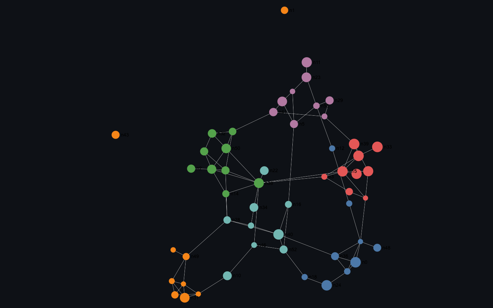
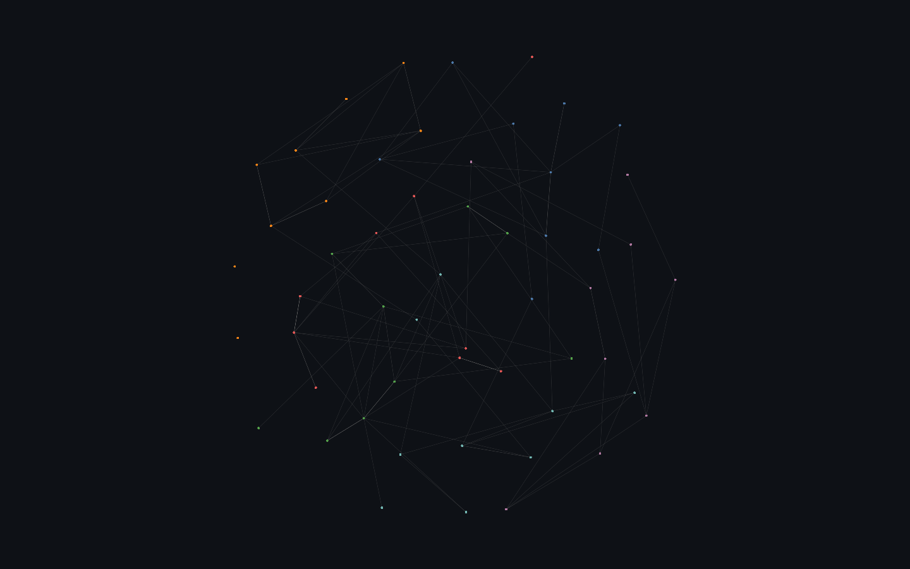

Compute node positions from graph structure (force-directed simulation) — the step before anything can be rendered. cosmos.gl runs the simulation on the GPU; Helios has a native force layout; Sigma uses the graphology-layout CPU companion; deck.gl and three.js expect positions you bring. Throughput is measured in the Layout-compute benchmark on the Graph page (GPU simulation vs CPU force-atlas).

Rendered on the real GPU and gate-verified — it draws, and the pixels change when the camera moves (not a frozen frame). Held 120 fps at 54 nodes / 86 edges.

Rendered on the real GPU and gate-verified — it draws, and the pixels change when the camera moves (not a frozen frame). Held 120 fps at 54 nodes / 86 edges.
| Library | Support | Notes |
|---|---|---|
| deck.gl | — none | A rendering layer — expects node positions computed elsewhere. No graph layout. |
| Sigma.js | ◑ workaround · verified | Sigma renders but has no layout of its own — positions come from the graphology-layout-forceatlas2 CPU companion (a fresh force-atlas layout computed from a random start). |
| cosmos.gl | ✓ native · verified | GPU force simulation (enableSimulation) — scatters the graph to a random start, lets the GPU sim organise it, then freezes the computed layout. Throughput is in the Layout-compute benchmark on the Graph page. |
| three.js | — none | A general 3D engine — no graph layout; external libraries (d3-force, 3d-force-graph) supply positions. |
| Helios-Web | ✓ native | Native force-directed layout (autoStartLayout). Measured interactive to ~100K nodes (~26 iters/sec); did not sustain live layout past ~100K in this test. |
Reference: https://cosmograph.app/